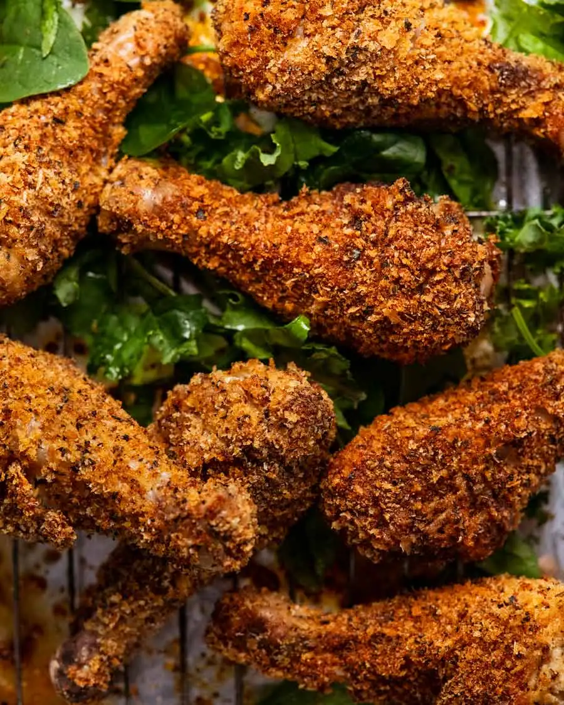

Crunchy crumbed chicken drumsticks

Description
I have a soft spot for chicken legs. Juicier and more flavourful than lean chicken breast, and more economical at that. With the bonus that there’s something extra enjoyable about food that has to be eaten with your hands.
Nobody eats drumsticks with a fork and knife, do they?? Surely not! Way too civilised and way too much meat wastage. There’s no way you can pick the bone clean of every scrap of meat with cutlery!!!
Hands all the way. GRAB and DEVOUR!
Ingredients
- Chicken
- Panko BreadCrumbs
- Salt & Pepper
- Cooking Oil
- Flour
- Paprika Chilli
- Garlic
Steps
I like to split the seasoning between the flour and the panko, for maximum flavour effect!
- Seasoning – Mix the seasoning in a small bowl.
- flour and breadcrumbs – Use 1 tablespoon of the seasoning for the flour, then mix the rest in with the panko.
- Crumbing (without making a mess!)- Use one hand to coat a drumstick in the flour then shake off excess. Use the same hand to coat the drumstick in egg, then allow the excess to drip off. Still using the same hand, place the drumstick in the panko, then use your other hand to sprinkle with panko. Press to adhere, rotate and coat all over with panko. Place on rack. Marvel at clean(ish) hands!!
- Repeat with remaining drumsticks, lining them up so they are evenly spaced.
- Spray generously with canola or other oil. I like to use canola oil because it comes out like a foam so I can see where I’ve sprayed. (PS The more you spray, the more golden and crunchy the coating. So don’t hold back!)
- Bake for 25 minutes at 200°C/400°F (180°C fan). Flip drumsticks, spray again, then bake for a further 20 minutes or until gorgeously golden and crunchy. Let them cool for 5 minutes – which also gives the crumb a chance to “set” – then dive in!